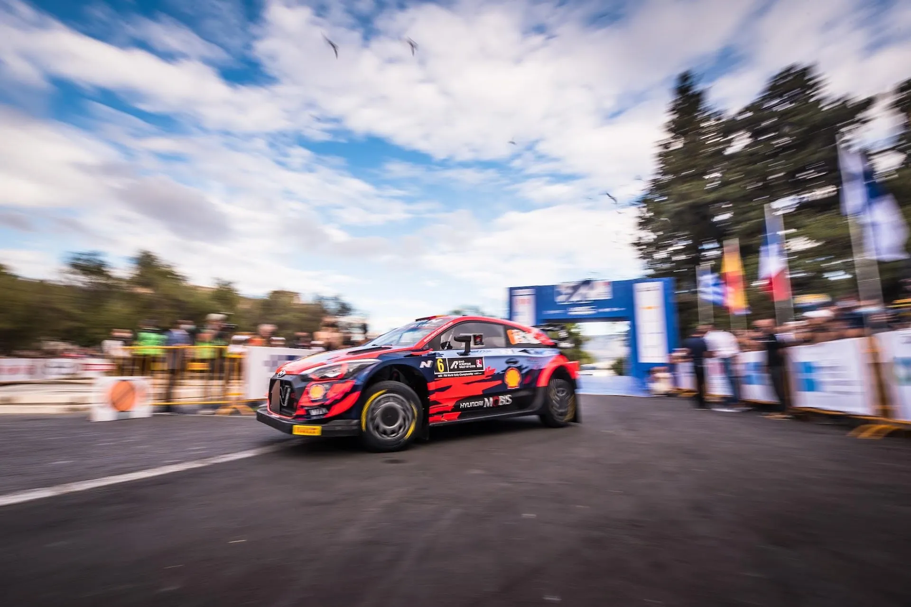
Ranking all the Acropolis Rally stages since 2021 - Part 1
Rally Acropolis returned to the World Rally Championship in 2021!
In these 3 years, 21 different special stages have been used (excluding the super-special ones) in Loutraki, Lamia, Itea, Viotia and Euritania.
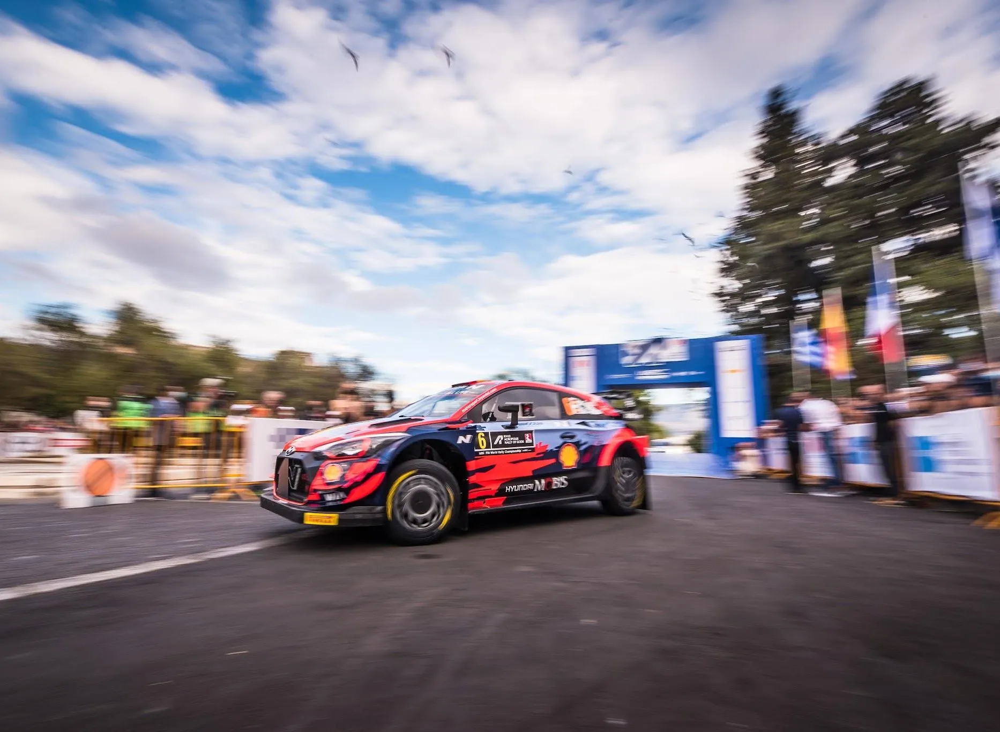
But which one has been the best, and which one the worst?
In this post we will see the stages from number 21 to number 15, with the other 2 parts also coming in the near future. The stages will be ranked based on:
- Height/altitude differences within the special
- Variety of roads within the stages (roads of different character)
- POV from onboard
- How "car breaking" they are
- And of course, my personal judgment
It is worth noting that the stages are ranked on the basis of their respective routes from 2021 and beyond, and only that, and of course how well suited they are to modern WRC cars.
Now, let's begin!
21. Perivoli (2022)
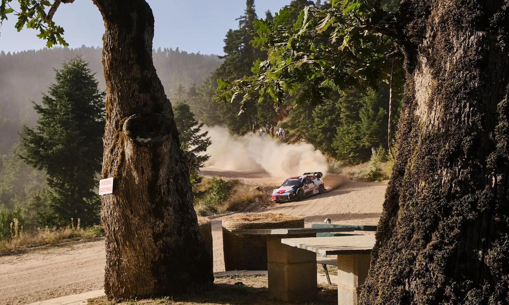
Perivoli was used in 2022 as a "connecting link" between Pyrgos and Tarzan. The 17.5 km special was last used in 2005, where it was also the first time we saw it at the Acropolis.
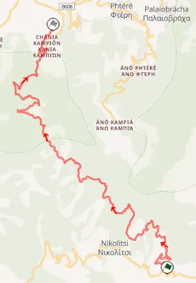
The map of the stage
The reason that it is in last place, is that first of all, we have to start somewhere unfortunately, and secondly, Perivoli is a very slow and technical stage that does not allow today's rally cars to "stretch their legs". For most of the stage cars did not exceed 90km/h! The first gear - second gear sections that the stage is full of, is very tiring, even for someone who is just watching the onboard. This is where Kalle Rovanpera's Acropolis came unstuck in 2022, with the Finn losing the boot of his Yaris after hitting a tree. Pierre Louis Loubet also suffered a puncture, that dropped him outside the podium places.
20. Grammeni (2023)
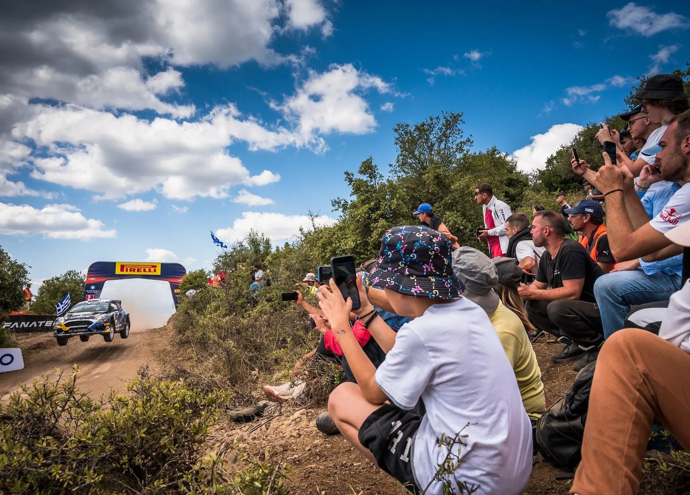
Grammeni was one of the special stages that had to be shortened because of the weather conditions in last year's Acropolis. The nine-kilometer section that was left was... OK. Nothing more, nothing less.
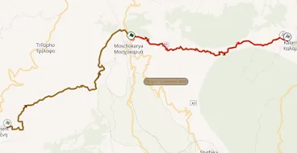
The map of Grammeni. In brown you can see the part that had to be cut from the stage.
The best part of what was left, for me, is roughly the last kilometre of the stage, with 2 jumps and some nice sections with cambered turns, allowing the cars to carry more speed through the corners. But other than that, nothing special unfortunately. Virves crashed after the jump on this stage with just a handful of corners remaining.
19. Loutraki (2023)
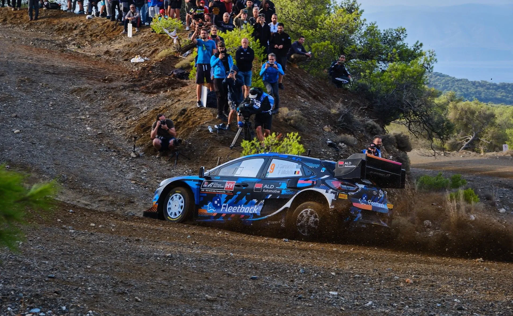
I'll admit it's a bit unfair to rank last year's Loutraki. The special had to shortened at the last minute due to the road deteriorating after the extreme rain. So the stage was only 10 kilometers long in the end.
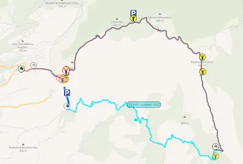
The stage was set to be basically 2022's Loutraki, only in reverse
The "butchered" stage was quite short. The section at the start of the stage is quite good, with some nice flow, but it is not enough to get this stage a better position in the ranking, especially when about 2.5 kilometers of special is asphalt. The stage saw Georg Linnamae roll spectacularly out of the rally.
18. Agioi Theodoroi (2021)
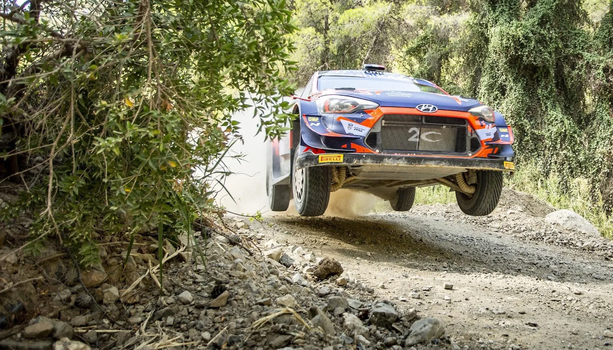
Agioi Theodoroi had the honor to be the first proper Acropolis special in the WRC after 8 years of absence. Unfortunately, it wasn't one of the best. The start of the stage had not been used since Kineta in 1999, and even then, that was in reverse. So that was cool.
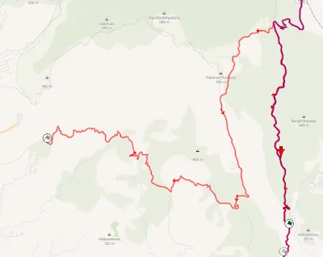
The map of the stage is in red and in purple is the section shared with Kineta
Agioi Theodoroi from 2021 was just mediocre. A car breaker stage, relatively flat, and very technical and slow. Especially towards the end of the stage, the road was so slow and technical, it was really tiring. There was also a three-kilometer asphalt section in the stage, which I personally am not a fan of. On the second pass of the stage in 2021, Pierre Louis Loubet had to stop and change a puncture, and Thierry Neuville dropped out of contention, when his power steering failed.
17. Elatia (2021)
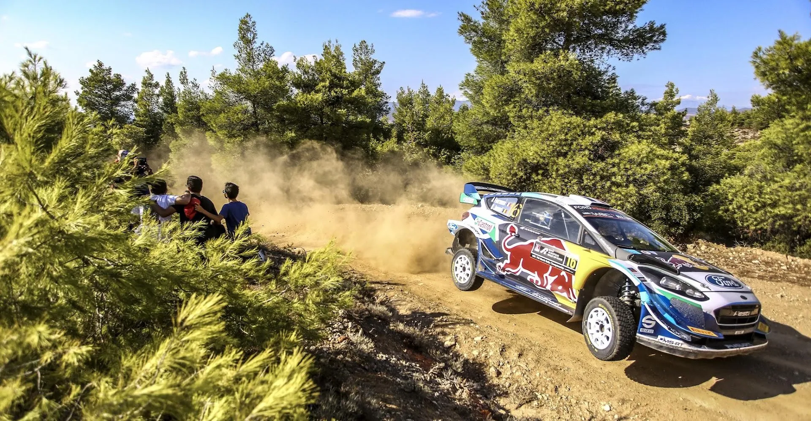
Another stage from 2021. This road, better known as Elatia - Zeli, is uphill, fast and in some parts quite rough, but mostly smooth. But beyond that, on its own, it's not something special. It was the fastest stage of the rally in 2021, with an average speed of 117.1 km/h!
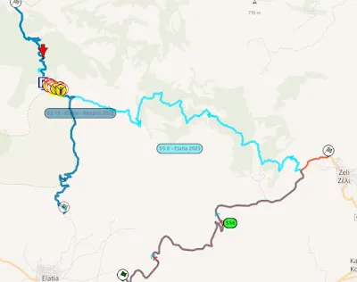
The 2021 Elatia, along with the 2023 Elatia and the 2022 Rengini stages
The Elatia Zeli section is not something special (in my opinion), but if it is combined with Rengini or with something a bit different like the road that goes to the Karyes, then it would be much higher on the list. Pierre Louis Loubet went out of the rally on this one, thanks to a broken steering arm.
16. Loutraki (2022)
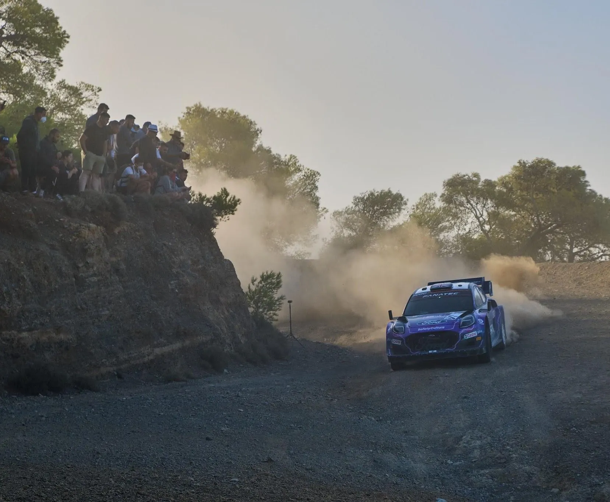
Another special near Loutraki. The 2022 Loutraki stage combines sections from the 2021 Loutraki stage and the 2021 Agioi Theodoroi. The start of the stage, is the end of Agioi Theodoroi stage of the previous year, the very slow and twisty part that I mentioned earlier. After that section, and 2.5 km of asphalt we reach the best part of the special which is faster and with much better flow.
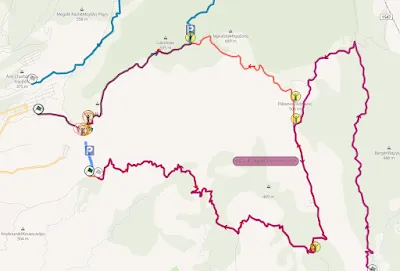
Loutraki along with the sections it has in common with the 2021 stages in the region.
Loutraki finds itself in this position on the list for mostly the same reasons as the above-mentioned stages of the region. The start of the stage is very slow and twisty, to the extent that this part of the stage is tiring even for someone who watches it from the onboard cameras. The section after the tarmac is quite good however, and that is why it's higher on the list than Agioi Theodoroi. Sebastien Loeb won the stage in 2022 to lead the rally, and the second pass saw Craig Breen having to stop and change a wheel on his Puma.
15. Gravia (2021)
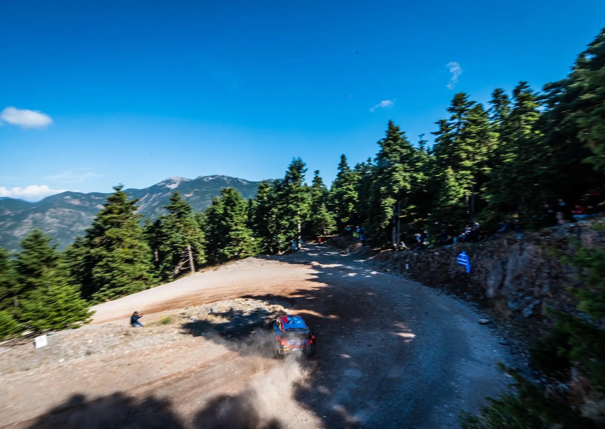
Gravia was used in 2021, on Saturday, as a one-pass stage. It was the slowest special of the rally that year, with an average speed of only 72 km/h! The start of the stage is quite narrow, technical and rough, with slow but also with some fast sections. Something that the stage is known for are the many hairpins, with most of them appearing in the "Parnassos" part of the stage, which is used in the Historical Acropolis Rally, with this piece of road being less of a car breaker.
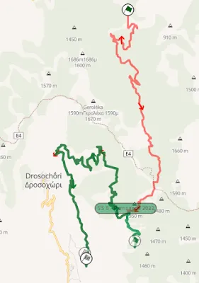
The map of Gravia. With green it's the Parnassos stage used in the Historic Rally Acropolis
Towards the end of the special, the road gets wider and faster, and I think it's ideal for today's WRC. It is a pleasant break after the many hairpins and slow turns. Kalle Rovanpera went 7.5s faster than everyone on this stage, to solidify his lead en route to his first Acropolis win.
All of the pictures come from the Rally Acropolis website, and the Rally Acropolis Archive.